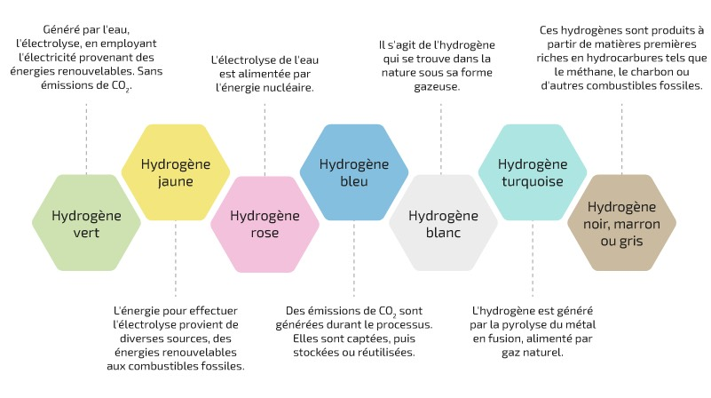

L’hydrogène se décline en plusieurs « couleurs » selon sa méthode de production. Chaque type implique un niveau d’émissions de gaz à effet de serre et des coûts spécifiques. Voici les principales variantes :

- Hydrogène gris : produit à partir de gaz naturel par reformage à la vapeur, sans capture des émissions de CO₂. C’est la méthode la plus courante aujourd’hui, mais aussi la plus polluante.
- Hydrogène bleu : similaire à l’hydrogène gris, mais avec capture et stockage du CO₂ émis, ce qui réduit son impact environnemental.
- Hydrogène vert : produit par électrolyse de l’eau avec de l’électricité issue de sources renouvelables, sans émissions de CO₂ directes.
- Hydrogène turquoise : produit par pyrolyse du méthane, générant du carbone solide au lieu de CO₂, encore en phase expérimentale.
- Hydrogène jaune : produit par électrolyse alimentée par l’électricité du réseau, qui peut être mixte (fossile et renouvelable).